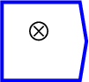
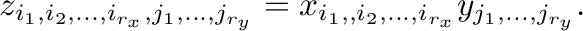
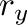
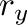
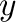
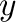

Next: index
Up: Tensor operations
Previous: inner product
Contents

Calculates the inner product of two
tensors.
The operator can be placed on the canvas in two ways:
- From the Tensor Operations (``tensor'') toolbar
 ;
or
;
or
- By typing the letters ``outerProduct'' on the canvas and then pressing
the Enter key.
It computes:

where  and  are the ranks of
and  are the ranks of  and  respectively.
and  respectively.